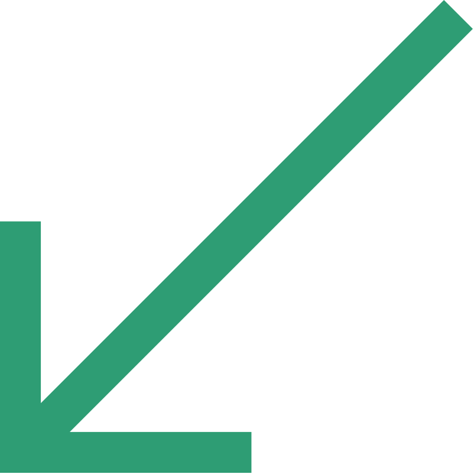
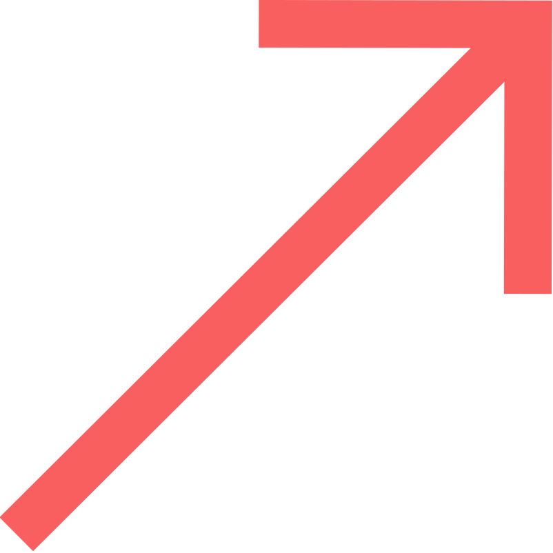

Me
Gross Hours:
{{ grossHours }}
Effective Hours:
{{ effectiveHours }}
{{ day | date:'E' }}
Today (9:30 AM - 6:30 PM)
{{ currentTime }}
{{ currentDate }}
Since Last Login: {{ timeSinceLastLogin }}
Logs & Requests
Last 30 Days
Day Shift 1( {{ currentDate }})
{{ selectedLog?.details?.shiftTime }}
Location:
{{ selectedLog?.details?.location }}
 {{ event.displayTime }}
{{ event.displayTime }}
{{ currentMonth | date: 'MMMM yyyy' }}
{{ day }}
{{ date.day }}
{{ date.timing }}
W-OFF